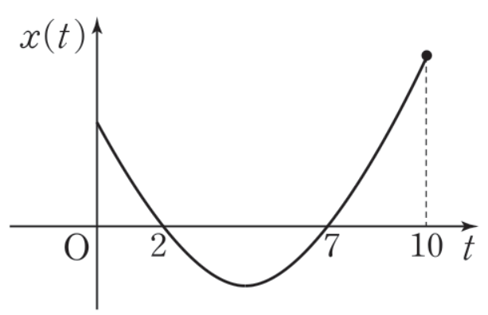

2026학년도 2학기 | 미적분 I
지면에서 수직으로 이륙한 어느 소방 헬기의 \(t\)초 후의 높이를 \(f(t) = t^2 + 2t\,\text{m}\) (\(0 \leq t \leq 10\))이라 한다. \(t = 1\)에서의 순간속도는 얼마인가? 평균변화율 \(\dfrac{f(1 + h) - f(1)}{h} = 4 + h\)에서 \(h \to 0\)을 취하면 \(4\,\text{m/s}\). 이것이 바로 \(f'(1) = 4\). 즉 속도 = 위치의 도함수, 그리고 가속도 = 속도의 도함수가 본 차시의 핵심 발견이다.
[개방형 발문] 운동 방향이 "양 \(\to\) 음"으로 바뀌는 순간 속도는 어떤 값이어야 할까? 또한 가속도가 \(0\)이라는 것은 운동에서 어떤 물리적 의미를 갖는지 추측해 보자. (비상 미적분 I P.93 · 개념 탐구 참고)
[연결] 차시 14·15에서 익힌 "도함수의 부호 변화 = 함수의 증감" 사고가 본 차시에서는 "속도의 부호 변화 = 운동 방향 전환"으로 자연 확장된다. 즉 운동의 위치 \(x = f(t)\)를 함수, 속도 \(v(t) = f'(t)\)를 그 도함수로 보면 차시 14·15·16의 모든 도구를 그대로 운동 해석에 적용할 수 있다. 가속도 \(a(t) = v'(t) = f''(t)\)는 한 단계 더 높은 도함수. (비상 미적분 I P.93 · 단원 통합 개념 참고)
수직선 위를 움직이는 점 \(\mathrm{P}\)의 시각 \(t\)에서의 위치를 \(x = f(t)\)라 하자.
핵심: "위치 \(\to\) (미분) \(\to\) 속도 \(\to\) (미분) \(\to\) 가속도"의 2단계 도함수 사슬. 미분이라는 도구가 물리량 사이의 관계를 정량화하는 핵심 언어임을 보여주는 단원. (비상 미적분 I P.93~94 · 정의 + 정리 박스 참고)
핵심: "운동 방향을 바꾸는 시각" 문제 \(\Leftrightarrow\) "\(v(t) = 0\) AND 좌우 부호 변화". 이것은 차시 15의 극값 판정과 정확히 동일한 절차다 — 위치 \(x = f(t)\)의 극값 = 운동 방향 전환점. (비상 미적분 I P.94 · 예제 1 + 참고 박스)
수직선 위 점 \(\mathrm{P}\)의 위치가 \(x = -t^3 + 6t^2\) (\(t \geq 0\)).
STEP 1 (속도·가속도 식): \(v(t) = \dfrac{dx}{dt} = -3t^2 + 12t\), \(a(t) = \dfrac{dv}{dt} = -6t + 12\).
STEP 2 (\(t = 1\) 값): \(v(1) = -3 + 12 = \) \(9\), \(a(1) = -6 + 12 = \) \(6\).
STEP 3 (방향 전환): \(v(t) = 0 \Rightarrow -3t(t - 4) = 0 \Rightarrow t = 0\) 또는 \(t = 4\). \(t \gt 0\)이므로 \(t = 4\). 그 좌우에서 \(v\)의 부호 \((+, -)\) \(\Rightarrow t = 4\)에서 운동 방향 전환(양 \(\to\) 음).
핵심: 운동 방향 전환은 위치 함수의 극값과 동치. \(x(4) = -64 + 96 = 32\)이 이 운동에서 도달한 최고 지점(극댓값)이다. (비상 미적분 I P.94 · 예제 1 참고)
지상 \(15\,\text{m}\)에서 \(10\,\text{m/s}\)로 수직으로 쏘아 올린 물체의 \(t\)초 후 높이 \(x = -5t^2 + 10t + 15\,\text{m}\).
(1) 최고 높이까지의 시간 + 그때 높이: \(v(t) = -10t + 10\). 최고점에서 \(v = 0 \Rightarrow t = 1\). 높이 \(x(1) = -5 + 10 + 15 = \) \(20\,\text{m}\).
(2) 지면에 떨어지는 순간의 속도: \(x(t) = 0 \Rightarrow -5(t + 1)(t - 3) = 0 \Rightarrow t = 3\) (양수). \(v(3) = -30 + 10 = -20\,\text{m/s}\). 부호 음수 = 아래 방향. \(-20\,\text{m/s}\).
물리적 해석: "최고점 = 속도 \(0\)인 순간"은 일상 직관과 정확히 일치 (공을 던지면 정점에서 잠시 멈춤). 떨어질 때의 속도 부호 음수 = 아래 방향. 가속도 \(a(t) = -10\,\text{m/s}^2\) 일정(중력가속도 근사). (비상 미적분 I P.95 · 예제 2 참고)
제한 속도 \(80\,\text{km/h}\)인 \(15\,\text{km}\) 구간을 \(10\)분(\(\dfrac{1}{6}\)시간)에 통과한 자동차가 있다.
평균속도 = \(\dfrac{15}{1/6} = 90\,\text{km/h}\) \(\gt 80\).
차시 13의 평균값 정리: 운동이 미분가능하므로 어떤 시각 \(c\)에서 순간속도 \(v(c) = 90\,\text{km/h}\)인 점이 존재한다.
결론: 평균속도가 \(90 \gt 80\)이므로 적어도 한 번은 순간속도 \(90\,\text{km/h}\)로 초과한 시점이 있다. 제한 속도 초과한 순간이 있다 ✓.
핵심: 구간 단속 제도의 수학적 정당성은 평균값 정리. 운동 해석 + 평균값 정리(차시 13) + 도함수(차시 09·10·11)의 단원 통합 응용. (비상 미적분 I P.98 · 도전 14 참고)
속도·가속도 직접 계산, 운동 방향 전환
두 점의 운동 비교, 그래프 해석

📢 학생 A: "그래프의 꼭짓점에서 \(\mathrm{P}\)의 속도는 \(0\)이야."
📢 학생 B: "\(t = 0\)에서 \(t = 10\)까지의 평균속도는 그래프의 두 끝점을 잇는 직선의 기울기야."
📢 학생 C: "가속도는 어느 시각에서나 같은 값이야."
"틀려야 는다!" 운동 거리 ≠ 위치 변화량
"위치 변화량 = 운동 거리"라는 학생 직관이 깨지는 차시 19의 핵심 함정. 미적분 I 단원 II의 모든 운동 문제에서 가장 자주 등장하는 오답 패턴.
STEP 1 — 운동 방향 분석: \(v(t) = 3t^2 - 12t + 9 = 3(t - 1)(t - 3)\). \(v = 0 \Rightarrow t = 1, 3\). 부호: \(0 \lt t \lt 1\)에서 \(v(0.5) = 0.75 - 6 + 9 = 3.75 \gt 0\) \(\Rightarrow +\). \(1 \lt t \lt 3\)에서 \(v(2) = 12 - 24 + 9 = -3 \lt 0\) \(\Rightarrow -\). \(3 \lt t \lt 4\)에서 \(v(4) = 48 - 48 + 9 = 9 \gt 0\) \(\Rightarrow +\). 즉 운동 방향은 \(+,-,+\) — 방향 전환이 2번 일어난다.
STEP 2 — 각 구간의 위치 값: \(x(0) = 0,\ x(1) = 1 - 6 + 9 = 4,\ x(3) = 27 - 54 + 27 = 0,\ x(4) = 64 - 96 + 36 = 4\).
STEP 3 — (1) 위치 변화량(변위): \(x(4) - x(0) = 4 - 0 = 4\). 단순 끝값 - 시작값.
STEP 4 — (2) 운동 거리(왕복 포함): 방향 전환을 기준으로 구간을 쪼개서 각 구간의 이동 거리의 합으로 계산:
· \(0 \to 1\): \(|x(1) - x(0)| = |4 - 0| = 4\) (양방향 운동).
· \(1 \to 3\): \(|x(3) - x(1)| = |0 - 4| = 4\) (음방향 운동, 되돌아감).
· \(3 \to 4\): \(|x(4) - x(3)| = |4 - 0| = 4\) (다시 양방향).
· 총 운동 거리 = \(4 + 4 + 4 = 12\).
STEP 5 — 두 값이 다른 이유: 위치 변화량 \(4\)는 "단순 시작-끝 차이"로 운동이 직선적으로 진행됐다고 가정했을 때의 값. 하지만 실제로는 \(t = 1\)에서 후진, \(t = 3\)에서 다시 전진하므로 왕복이 포함된 누적 거리가 훨씬 크다(\(12\)). "변위(displacement) ≠ 이동 거리(distance)"라는 물리 + 수학 공통 핵심 개념.
핵심 통찰: 운동 거리를 정확히 구하려면 (i) 방향 전환점 시각을 찾고, (ii) 각 구간의 변위 절댓값을 합하는 2단계가 필수. 학생들이 가장 자주 빠지는 함정:
① "\(x(끝) - x(시작)\)이 곧 운동 거리"라고 자동 처리 — 방향 전환 시 오답.
② 방향 전환점을 \(v = 0\)에서 부호 변화로 잡지 않고 단순 "\(v = 0\)"으로만 잡아 횟수를 잘못 셈.
③ "위치의 그래프가 위로 갔다 내려오면 운동 거리 = 두 끝값의 거리 + 위로 갔다 온 만큼"인데 그것을 따로 계산하지 않음.
전망: 본 함정은 차시 23(정적분의 활용)에서 "변위 = \(\int v(t)\,dt\), 운동 거리 = \(\int |v(t)|\,dt\)"라는 적분 공식으로 일반화된다. 차시 19의 손계산 사고를 적분 도구로 자동화하는 것이 차시 23의 핵심 진보.
📖 출처: 수능특강 수학Ⅱ · 도함수의 활용 2 · 유제 7 [26009-0105]
난이도 ★★★ (학습지 max+2, 7분) · 핵심: 두 점의 위치가 같아지는 방정식의 근 정렬 → 출발(\(t = 0\)) 다음의 두 번째 만남 시각 식별 → 그 시각에서의 속도 \(v = \dfrac{dx}{dt}\) 차이
핵심: 동시 출발 \(\Rightarrow t = 0\)에서 자동으로 한 번 일치하므로, 두 번째 만남은 \(t = 0\) 이후 두 번째 큰 근. 차시 19의 속도·가속도 시나리오에서 자주 등장하는 "두 점의 운동 비교" 유형 — 위치식의 차 \(x_1 - x_2 = 0\)을 인수분해해 만남 시각을 모두 정렬한 뒤, 요구된 순번의 시각을 골라 속도식에 대입한다.
📖 출처: 2025학년도 6월 모의평가 수학영역 공통 11번 [4점]
난이도 ★★★ (학습지 max+2, 7분) · 핵심: 위치 \(\to\) 속도(미분) \(\to\) 가속도(2계 미분) — 보기 ㄱㄴㄷ 검증으로 위치, 속도, 운동 방향 전환, 가속도의 4가지 개념을 통합 점검
— 〈 보 기 〉 —
ㄱ. 시각 \(t = 1\)일 때 점 \(\mathrm{P}\)의 위치는 \(1\)이다.
ㄴ. 시각 \(t = 1\)일 때 점 \(\mathrm{P}\)의 속도는 \(0\)이다.
ㄷ. 출발한 후 점 \(\mathrm{P}\)의 운동 방향이 바뀌는 시각에 점 \(\mathrm{P}\)의 가속도는 \(4\)이다.
① ㄱ ② ㄴ ③ ㄷ ④ ㄱ, ㄷ ⑤ ㄴ, ㄷ
핵심: 차시 19의 4가지 핵심 도구 — (1) 위치 함수 직접 대입, (2) 속도 = 위치의 1계 도함수, (3) 가속도 = 속도의 도함수(= 위치의 2계 도함수), (4) 운동 방향 전환 \(\Leftrightarrow v = 0\) 그리고 부호 변화 — 가 한 번에 통합된 평가원 4점 기출. 특히 ㄱ의 "위치"와 ㄴ의 "속도"를 혼동하지 않는 것이 함정 회피의 출발점. ㄷ에서 "\(v(t) = 0\)이라고 모두 방향 전환은 아니다(부호 변화 필수)"는 차시 19의 가장 중요한 원리.
스마트폰으로 우측 QR코드를 스캔하여, 아래 3가지 유형 중 하나 이상을 체크하고 통합 서술형으로 작성해 제출한다.